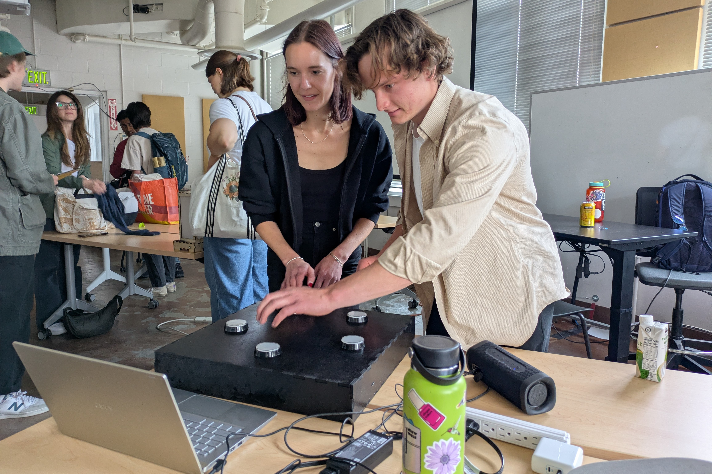
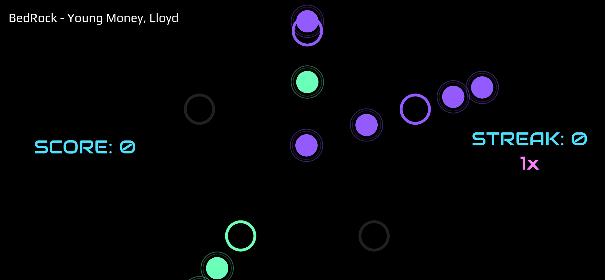
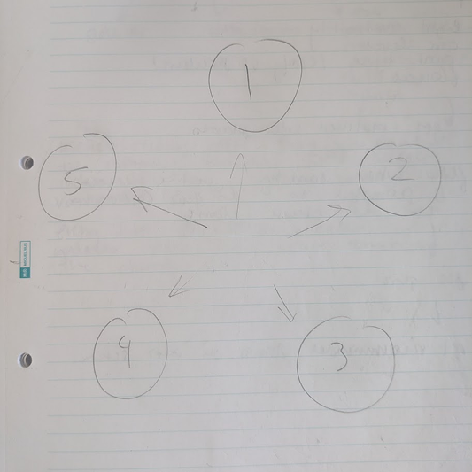
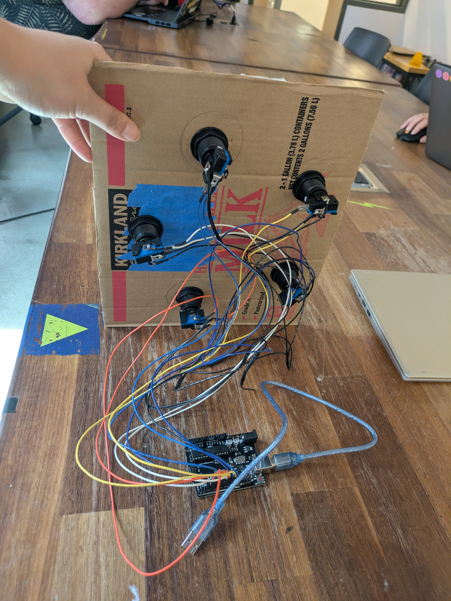
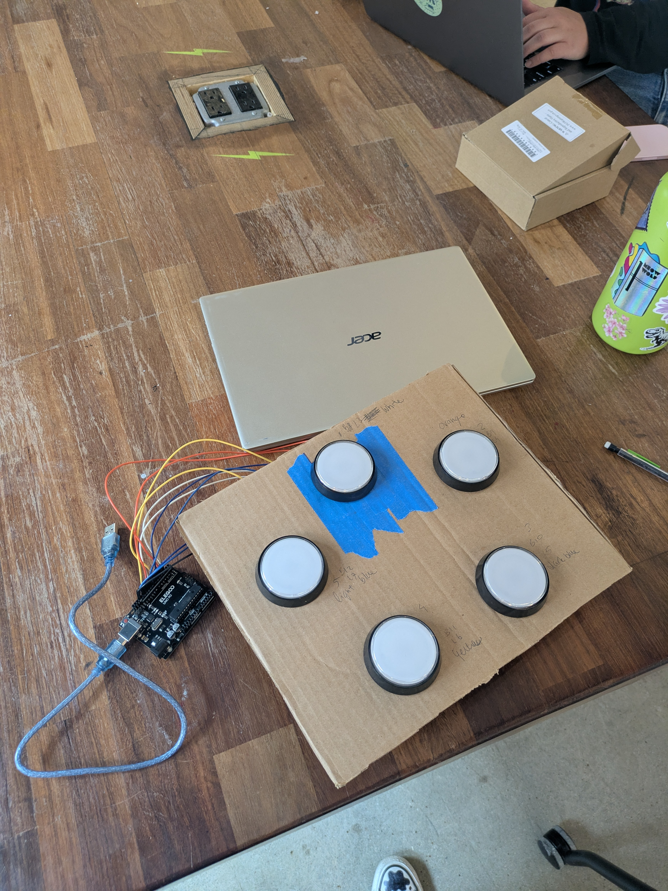
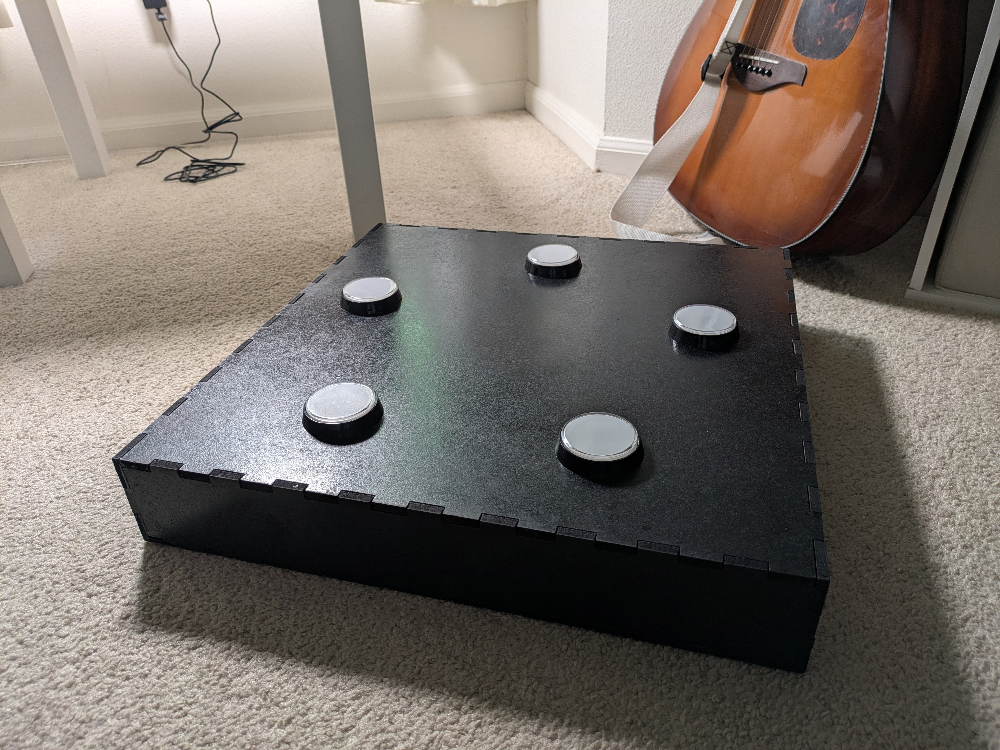
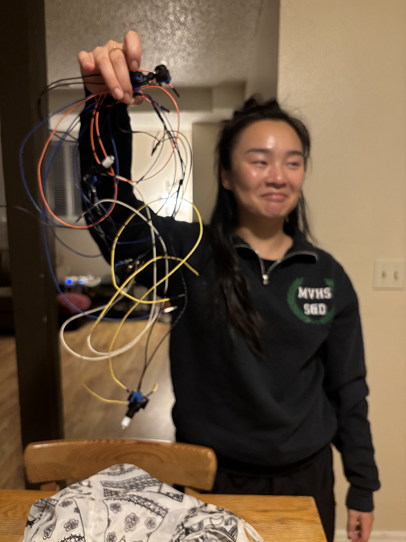

<> onBeat DUO </>
Inspiration

As a person who is terrible at video games and generally does not play them, the ones that I’ve enjoyed most have featured the following:
For this project, I wanted to create a game experience that encompasses all of the above. As I was brainstorming, I knew I wanted to incorporate music into the game somehow, so the logical next step was to create a rhythm game.
The funny thing is, I have historically struggled with rhythm games, which is an extension of my struggles with video games in general. I find that for me it’s unintuitive to instantly map the correct action (a swipe, a press, stepping on an arrow on the floor), to what the visual interface of the game is telling me to do. I consider myself to have a strong sense of rhythm, but my lack of skill with video game interfaces and controllers held me back from fully feeling the music and enjoying rhythm games.
The First Level
My solution, then, was to build an idiot proof controller (What could be more simple than slamming a big button?), and making a bold, minimal visual interface. My original plan was to make a grid of nine buttons that mapped to targets on the screen, but I realized that that would make it difficult to tell which notes were going to which target. So I switched to a circular layout, with five targets in total.


My first controller prototype was literally 5 numbered circles drawn on a piece of paper. I used Gemini to help me understand the logic and code structure of a basic rhythm game, and then implemented what I learned in P5JS. The first song that I choreographed a level for was ET by Katy Perry. While creating the level, I moved my hands on the paper “controller”, to get a sense of what the movement would feel like.
After ordering a 5 pack of big, slammable arcade buttons off of Amazon, I got to work learning how they worked and how to wire them up. The gist is, I spent an inordinate amount of time soldering wire to all these buttons to get them connected to an Arduino, and then wrote a simple script to stream data from the computer’s serial port to the game server in real time, essentially telling the game which buttons were pressed down and when.
Before finalizing the controller dimensions, I screwed all the buttons into a piece of cardboard to test additional levels, timing, and tactile feedback.


Once I felt satisfied that my controller design was effective, it was time to build a sturdy enclosure to mount the buttons and hide the wires, as well as provide a solid, smackable surface for what I imagined would be aggressive gameplay. I settled on laser cutting medium-density fiberboard from my local Home Depot because it was relatively cheap, very sturdy, and easy to paint. I made my measurements, spun up a design in Rhino3D (shout out makercase.com!), cut the pieces out on a laser cutter, and wood glued the whole thing together. The final touch was spray painting it black, and voila! It was ready to be used to play my game.

Exhibition and Gameplay
Showing this game at ATLAS EXPO 2026 was one of the most fun and rewarding experiences of my life. SO MANY people of varying ages and backgrounds came through and tried my game out. I had the time of my life playing the game with new people, as well as watching others take on the challenge of staying on beat in each level that I designed. There was so much laughter and some amused panic at the harder levels I created, and I really felt I had fulfilled my goal of creating an experience that created connections between people. It was also so gratifying to share my love of music with so many people, and give them an opportunity to feel, play, and interact with these songs in a new way.

Building OnBeat DUO pushed me so far out of my comfort zone in the best way. It was a fully hands on, trial by fire learning experience, and I learned so many new skills, as well as how to plan and execute complex projects over a longer time frame.
All technical challenges aside, I loved building something fun, a little bit goofy, musical, and memorable for people to play with and enjoy.